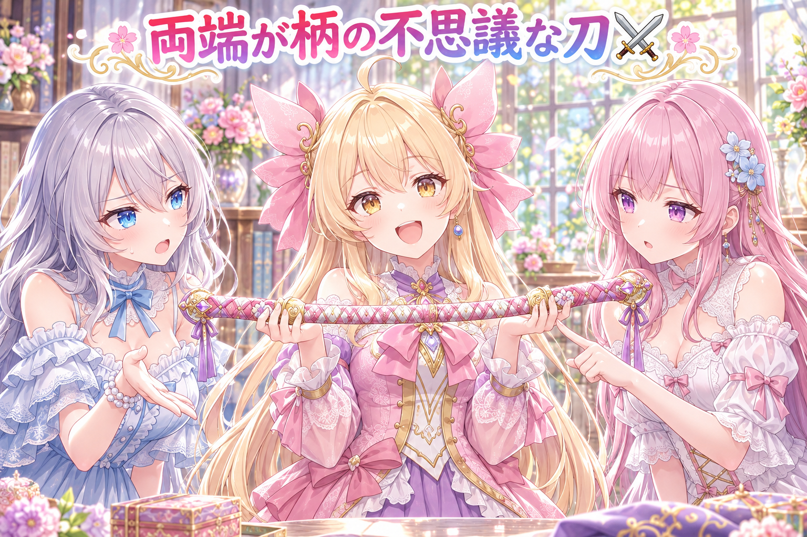
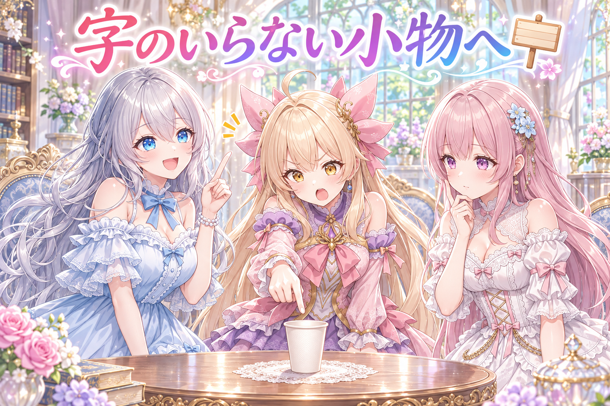
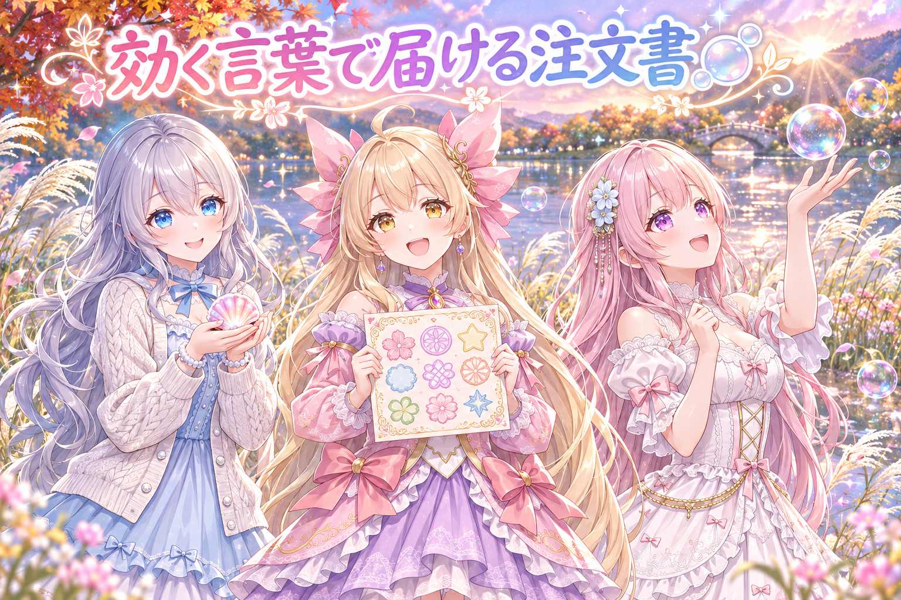
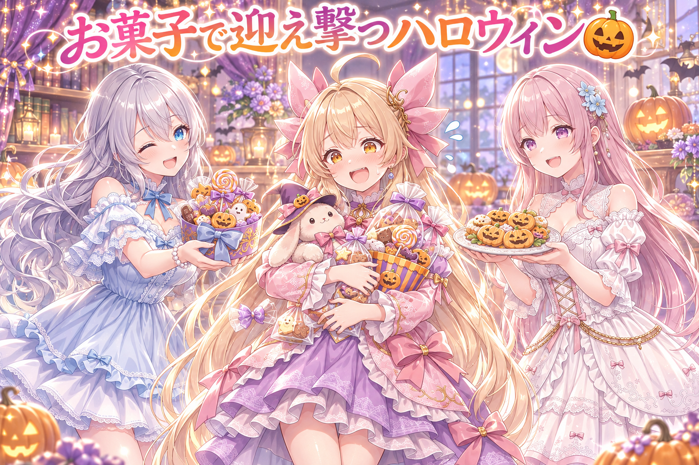
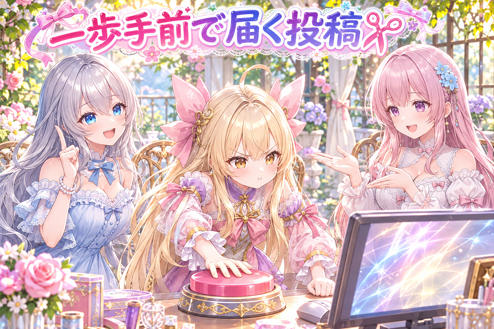
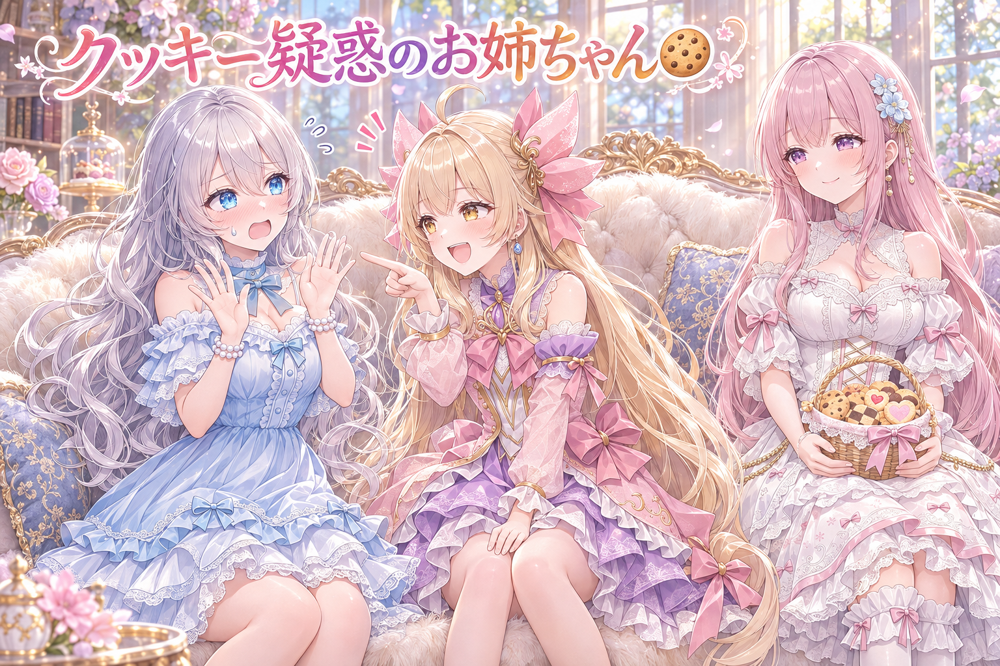

📌 3行まとめ
月曜日のハッシュタグ企画に出したアイリスの刀の絵で、両端に柄がついた不思議な刀が続けて出たため、肩に担ぐポーズに変えて描き直した
絵の中の紙や看板の文字が崩れやすいので、ネタ帳の場面を字の要らない小物へ50本あまり手で書き換えた
三姉妹のハロウィン漫画動画を公開し、上限ぴったりの投稿文で予約ボタンが押せない問題も少し手前で止める形に直した
もくじ 👀 今日のやらかし：柄が両方についた刀⚔️ 🪧 文字の崩れる紙と看板を、ネタ帳から追い出す 🫧 配布プロンプトは、効くタグだけで焼く 🎃 ハロウィン漫画を公開、こたつ回は粗探しの目へ ✂️ 押せないボタンを、押せるようにする日 🎁 お楽しみコーナー：禁断の質問コーナー 💐 今日のまとめ ルピナス （笑顔）
今日もAIBSの時間がやってきました、進行のルピナスです。前回はコスモス畑の題がかぶって描き直したけど、今日は刀で同じことが起きたの。
アイリス （びっくり）
かぶったっていうか、柄が両方についてたんだよ！
フィオナ （ふつう）
配信は今日はお休みしたので、作ったもののお話です。崩れた字の追い出しに、ハロウィン漫画の公開に、盛りだくさんですよ。
ルピナス （考え中）
それにしても、朝から日付が変わって明け方まで作業が続いちゃったんだよね。さすがに無理しすぎ。今日は休み休みいきましょう。
ルピナス （大笑い）
お水は多めに、おやつは控えめにね。
1. 👀 今日のやらかし：柄が両方についた刀⚔️ 
月曜日の夜にみんなで盛り上がるハッシュタグ企画に、刀を持ったアイリスの絵で参加しました。ところが焼いてみると、刀の両端に柄がついた、どちらを握ればいいのか分からない刀が出てきました。描き直しても同じ形が続けて出てしまったので、運に任せるのをやめて、刀の持たせ方そのものを変えることに。肩に担いで、もう片方の手は腰に置くポーズにしたところ、ひと休み中の剣士らしい一枚になりました。
アイリス （笑顔）
見て見て！あたしの新しい刀！両方に持つところがあるから、右からでも左からでも抜けるんだよ！
ルピナス （呆れ）
抜くも何も、刃がないんだよね、それ。刃はどこに行ったの？
フィオナ （ふつう）
真ん中も柄でした。あの、刀というより、とても長いお箸の持ち手に近いです。
アイリス （びっくり）
お箸！？じゃあ月曜日をつまんで片づける感じで……
ルピナス （大笑い）
討伐じゃなくて、お食事になってるじゃない。
フィオナ （考え中）
描き直せば直るかと思ったのですが、続けて同じ柄つきの刀が出てきまして。
アイリス （ドヤ顔）
つまりあたしの刀は、何回も出てくるほど人気ってこと！
ルピナス （ふつう）
人気じゃなくて、AIの癖ね。だから握らせ方ごと変えたの。肩にかついで、片手は腰。
アイリス （笑顔）
それ、めっちゃ強そう！戦いのあとにひと休みしてる剣士っぽい！
フィオナ （笑顔）
手が刀に触れる場所が一か所になったので、AIも迷わずに済んだみたいです。
アイリス （ウインク）
じゃあ次から、お箸も肩にかついで持つね。
📝 ポイント（初心者向け解説・技術メモ・まとめ）
初心者向け解説 ：長い物を両手でぎゅっと持たせると、AIは『どっちが持ち手？』と迷って、両方を持ち手にしちゃうことがあるの。荷物を肩にひょいっと乗せるみたいに、触る場所を一つにしてあげると迷子にならないよ⚔️技術メモ ：刀・槍など細長い道具を両手持ちで指定すると、柄が両端に生成される・刃が消えるといった構造崩れが起きやすい。同じ崩れが再生成で続いたら seed を回し続けず、sword on shoulder＋hand on hip のように接触点が1つのポーズへプロンプト側で変えるほうが早いひとことまとめ ：同じ崩れが続いたら、運ではなくポーズを疑う
2. 🪧 文字の崩れる紙と看板を、ネタ帳から追い出す 
絵の中で誰かが手紙やメモを持っていたり、街に光る看板があったりすると、AIはそこに文字っぽい何かを描こうとして、読めない崩れた字になりがちです。せっかくの絵も、崩れた字がひとつあるだけで一気に作り物っぽく見えてしまいます。そこで、まだ使っていないネタ帳の場面から、字の書かれた紙を持つ場面を50本あまり探し出し、一本ずつ手で字の要らない小物に書き換えました。あわせて、ネオンの看板が出てくる場面からはネオンを外し、指がからまりやすい『手をつなぐ』場面は、手すりを持つ・並んで歩く形に変えています。
ルピナス （笑顔）
はい、ここでクイズです！AIに描かせると、字がぐにゃぐにゃに崩れやすい物はどれでしょう？
ルピナス （呆れ）
絵の話をしてるの。寝言は描けないでしょう。
フィオナ （考え中）
手紙、メモ、看板……それから、ネオンの光る看板でしょうか。
ルピナス （笑顔）
正解。それと、もうひとつ意外な伏兵がいるの。紙コップのロゴ。
アイリス （びっくり）
紙コップ！？飲み物を持ってるだけで！？
フィオナ （ふつう）
カップの側面に、お店のマークのような字を勝手に描いてしまうんです。小さいので見落としやすくて。
アイリス （怒り）
紙コップ、こっそり落書きしてたんだ……許さない……！
ルピナス （ふつう）
だから、まだ使ってない場面から字の紙を持ってる物を50本あまり見つけて、全部、字の要らない小物に書き換えたの。
アイリス （考え中）
手紙を持ってた子は、代わりに何を持つことになったの？
フィオナ （笑顔）
場面ごとに、そこにありそうで文字の要らない物を選びました。一本ずつ、手で書いています。
アイリス （衝撃）
50本あまりを手で！？あたしなら3本目で寝言いってる！
ルピナス （ウインク）
ついでに、手をつなぐ場面も手すりや並んで歩く形にしたわ。指がからまって増えやすいから。
アイリス （笑顔）
じゃあ第2問！あたしの寝言の中で、一番崩れてるのはどれでしょう！
📝 ポイント（初心者向け解説・技術メモ・まとめ）
初心者向け解説 ：AIにとって文字は、読めないまま形だけまねした『おまじないの模様』みたいなもの。だから最初から文字の出番がない場面にしてあげるのが、いちばんきれいに仕上がるコツだよ🪧技術メモ ：崩れ字の温床になりやすいのは held paper（手紙・メモ）、signage、neon lights、紙コップのロゴなど。ネガティブで text を抑えるより、プロンプトから文字を持つ物体そのものを外すほうが確実。複数人の hand holding も指の融合が起きやすいので、holding handrail や walking side by side に置き換えるひとことまとめ ：字は消すより、最初から出番を作らない
3. 🫧 配布プロンプトは、効くタグだけで焼く 
三姉妹は、絵を描く人向けにプロンプト（AIへの注文書）を配る企画も続けています。この日は、すすきの河原でシャボン玉を見上げるフィオナと、秋の海辺で桜色の貝殻を見せてくれるルピナスの2本を、ローカルの画像生成ツール向けに届けました。チャット型のAIに絵と名前を入れるだけで作れる、アイリスが主役の駅のスタンプラリーの台紙も公開しています。次に配る分の注文書も、AIに効かない言葉が混じっていないかを調べ、焼く前に効く言葉へ差し替えました。
フィオナ （笑顔）
シャボン玉の絵、自分で言うのもなんですが、すごく楽しそうに笑えていました。
アイリス （笑顔）
わかる〜！七色の玉を見上げてるだけで、秋って感じする！
ルピナス （ふつう）
私の貝殻も、夕日とセーターの編み目で、ちゃんと秋の海っぽくなったでしょう。
アイリス （ドヤ顔）
でもでも、今日いちばんはあたしのスタンプラリー！ゴールはなんと『アイリスの駅』なんだよ！
ルピナス （大笑い）
終点が自分の名前の駅って、ずいぶん強気な路線ね。
フィオナ （考え中）
わたしが駅を作るなら、途中に『ひと休みの駅』を三つくらい置きたいです。
アイリス （びっくり）
三つ！？全然ゴールに着かない路線じゃん！
フィオナ （照れ）
ゆっくり走る電車も、いいと思うんです……。
ルピナス （笑顔）
気持ちは分かるわ。それでね、次に配る分の注文書に、効かない言葉が混じってたの。
アイリス （考え中）
効かない言葉って、お願いしても聞こえてないってこと？
フィオナ （ふつう）
はい。AIが覚えている言葉の辞書に、ほとんど載っていない言葉があって。入れても絵が変わらないんです。
ルピナス （ふつう）
だから焼く前に調べて、ちゃんと効く言葉に差し替えたの。受け取ったみんなが、がっかりしないようにね。
フィオナ （笑顔）
配るものは、受け取った方の手元で同じように動くことが一番大事ですから。
アイリス （ウインク）
よし、あたしの駅の名前も効く言葉にしとこ。『世界一かわいいアイリスの駅』！
ルピナス （呆れ）
それは駅の看板が長すぎて、さっきの崩れ字になるやつね。
📝 ポイント（初心者向け解説・技術メモ・まとめ）
初心者向け解説 ：注文書に知らない言葉が入っていると、AIは聞こえないふりをしちゃうの。遠くの町の方言で注文しても伝わらないのと同じ。配る前に『ちゃんと伝わる言葉か』を確かめておくと、受け取った人も同じ絵に会えるよ🫧技術メモ ：Danbooru タグ系で学習したモデル向けのプロンプトは、投稿件数が0件のタグを入れても実質効かない。配布前にタグごとの件数を照合し、0件のタグは近い意味で件数のあるタグへ差し替える。差し替え候補も実在を確認したものだけにすると事故が減るひとことまとめ ：配る注文書は、効く言葉だけで書く
4. 🎃 ハロウィン漫画を公開、こたつ回は粗探しの目へ 
三姉妹の縦型ショート漫画動画『ハロウィンはいたずらする側のはず』を公開しました。ぬいぐるみを片手に、いたずらする気まんまんのアイリスを、お姉ちゃんたちがお菓子を山ほど用意して待ち構えるお話です。続く冬の新作、こたつのお話も動画の形になったので、作った本人とは別の目で、褒めずに粗だけを探すレビューにかけました。
アイリス （にやり）
ふっふっふ……お菓子をくれなきゃ、いたずらしちゃうぞ〜！
ルピナス （笑顔）
はい、どうぞ。山盛りのお菓子です。
アイリス （びっくり）
えっ、早っ！？まだ脅しきってないのに！
フィオナ （笑顔）
わたしからも、どうぞ。かぼちゃのクッキー、焼いてみました。
アイリス （あわあわ）
待って待って、いたずらする隙がない！両手がお菓子でふさがる！
アイリス （考え中）
……でも、かごが空っぽになったら？
アイリス （怒り）
フィオナ、宣伝がうまい！ずるい！
ルピナス （大笑い）
はい、コントはここまで。次はこたつの回ね。こっちは、作った私たちとは別の目で、褒めずに粗だけ探してもらったの。
アイリス （泣き）
褒めないの！？あんなにぬくぬくなお話なのに！？
フィオナ （ふつう）
作った本人は、つい頭の中の正解で見てしまいますから。初めて見る目のほうが、気づけることが多いんです。
ルピナス （ふつう）
三人の見た目の対応表も渡して、キャラの取り違えを指摘するときは、表と照らしてから言ってね、って決めてあるわ。
アイリス （考え中）
なるほど……じゃああたしも、自分のおやつの量を別の目で見てもらお。
ルピナス （呆れ）
それは別の目じゃなくても多いって分かるよ。
📝 ポイント（初心者向け解説・技術メモ・まとめ）
初心者向け解説 ：自分で書いた手紙って、何回読んでも誤字に気づきにくいよね。動画も同じで、作った人の目はいい所ばかり見ちゃうの。初めて見る誰かに『気になる所だけ教えて』ってお願いすると、ぐっと良くなるよ🎃技術メモ ：レビュー役のAIには『粗探し・褒めなくてよい』と役割を明示し、企画書（セリフ・ナレーション・擬音・オチ）と動画本体の両方を渡す。キャラの見た目の対応表を添え、取り違えの指摘は表と照合してから出させると誤指摘が減るひとことまとめ ：作った目と、見る目は分ける
5. ✂️ 押せないボタンを、押せるようにする日 
短文のSNSには文字数の上限があります。ところが、本文がちょうど上限ぴったりの長さだと、予約のボタンが押せずに投稿が止まる事故が、これまでに一度ならず起きていました。そこで、投稿文を確かめる仕組みの基準を、上限より少しだけ手前に揃えました。あわせて、予約に失敗した投稿を『出した』扱いにしないよう記録の付け方を直し、確認用の画面では、下の段の注意書きが長くなってもボタンが隠れないようにしました。
アイリス （怒り）
ちょっと待って、上限より手前で止めるの！？せっかくの文字数、もったいないじゃん！
フィオナ （ふつう）
でも、ぴったりだと予約のボタンが押せなかったんです。それも一度ではなく。
アイリス （考え中）
押せないなら、押せるまで連打すれば……
ルピナス （呆れ）
連打で直るなら、誰も困ってないんだよね。
フィオナ （考え中）
それに日本語は、1文字を重めに数える決まりなんです。思ったより早く上限が来ます。
ルピナス （笑顔）
そう。だから、ぴったりを狙うより、ちょっと手前で止めるほうが安全なの。
アイリス （しょんぼり）
うう……あたしの渾身の一文字が……
フィオナ （笑顔）
削った一文字のぶん、言い回しがきゅっと締まることも多いですよ。
ルピナス （ふつう）
裁定します。使い切りたい気持ちは分かるけど、届かない投稿は0文字と同じ。手前で止める派の勝ち。
アイリス （びっくり）
0文字！？それは悔しい！手前で止める！
ルピナス （笑顔）
それと、確認用の画面でも、下の注意書きが長いとボタンが隠れてたの。こっちも直したわ。
フィオナ （ふつう）
注意書きを横いっぱいに広げて、高さに上限をつけました。長くなっても中で収まるので、ボタンはいつも見えています。
アイリス （大笑い）
今日は押せないボタンを救う日だったんだね。ボタン救助隊、出動！
ルピナス （ウインク）
月曜日討伐隊の次は救助隊ね。忙しい子。
📝 ポイント（初心者向け解説・技術メモ・まとめ）
初心者向け解説 ：エレベーターに定員ぴったりで乗ると、ブザーが鳴っちゃうことってあるよね。投稿文も、上限ぴったりより一歩手前で止めておくと、安心して届けられるの✂️技術メモ ：短文SNSの文字数は重み付きで数えられ、日本語などの全角文字は1字を2として扱う。上限ちょうどでは予約操作が通らない事例が続いたため、確認ゲートの基準を上限より少し手前の安全値に統一。予約が失敗した投稿には出荷済みの印を立てない。UI 側は可変長の注意文を全幅＋max-height＋overflow でスクロールさせ、ボタンの表示領域を常に確保するひとことまとめ ：ぴったりより、確実に届く一歩手前
6. 🎁 お楽しみコーナー：禁断の質問コーナー 
常連リスナーさんから届きそうな、ちょっと答えにくい質問に、三姉妹が正直に答えます。
ルピナス （笑顔）
さて、お楽しみコーナー。今日は禁断の質問コーナーよ。答えにくい質問にも、三人で正直に答えます。
アイリス （笑顔）
一問目！『三姉妹で、いちばん寝坊するのは誰？』
フィオナ （照れ）
……あの、それは、日によるといいますか……
フィオナ （ふつう）
アイリスちゃんは、一度起きてから二度寝するので、寝坊の回数には数えないことにしています。
アイリス （衝撃）
数えないで済むなら、それ最強の作戦じゃん！
ルピナス （ふつう）
寝坊を隠すために二度寝を数えないのは、ただの言いのがれよ。はい、二問目。
フィオナ （考え中）
『お姉ちゃんが、妹たちに隠していることは？』……だそうです。
ルピナス （びっくり）
えっ、私？隠していることなんて、別に……
アイリス （にやり）
かぼちゃのクッキー、ハロウィンの次の日に数が減ってた件！
フィオナ （びっくり）
あ。そういえば、焼いた数より少なかったです。
ルピナス （照れ）
……味見よ。お姉ちゃんとして、品質の確認をね。
ルピナス （あわあわ）
五枚とは言ってないでしょう！
フィオナ （笑顔）
お姉ちゃん、気に入っていただけたなら、また焼きますね。
三姉妹に聞いてみたい、ちょっと答えにくい質問があったら、コメントでこっそり投げてみてね！
7. 💐 今日のまとめ
同じ崩れが続いたら、運に任せず、ポーズや持たせ方を変える
文字の崩れやすい紙や看板は、最初から場面に入れない
配る注文書は、効く言葉かどうかを焼く前に確かめる
投稿文は上限ぴったりより一歩手前で止める
みんなは、AIの絵でついつい出てしまう崩れ、どうやって避けてる？
💬 コメント
お名前とコメントだけで送れるよ（承認されるとみんなに表示されます🌸）
コメントを読み込み中…